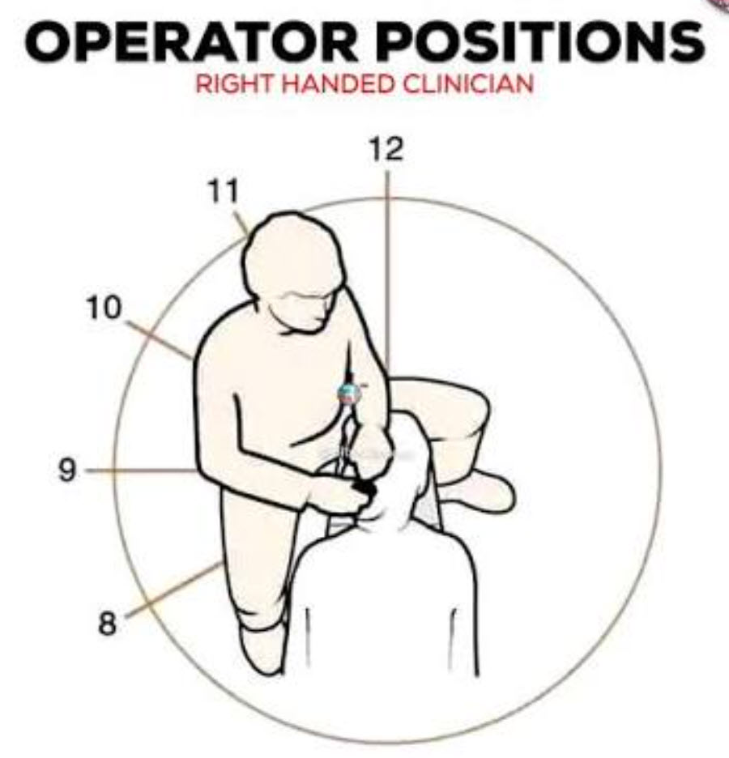
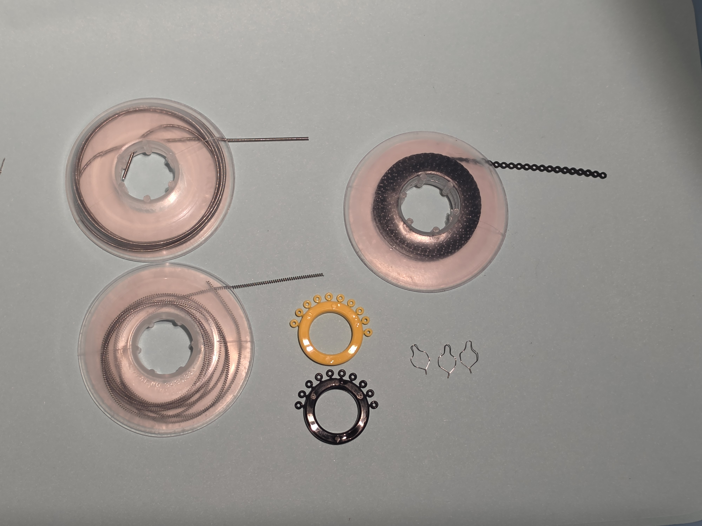

Tooth Identification, Braces & Clear Aligners
Naming any tooth in under two seconds, and knowing what is attached to it.
By the end of today you will be able to
- Identify any tooth across all four quadrants by name and by practice shorthand.
- Orient reliably to patient right and patient left while standing chairside.
- Name every component of a fixed braces setup.
- Name every component of a clear aligner case and explain what each does.
- Describe the standard tray setup for each system.
Rapid, accurate tooth identification is the skill that separates a tech who can keep up from one who slows the chair down. In practice, teeth are identified by anatomical name, by practice shorthand, or by universal quadrant notation, and you need all three to be automatic.
Right and left always refer to the patient's right and left, never your own. When you are standing chairside facing a seated patient, the patient's right is on your left side. Getting this backwards is the single most common new-tech error, and it is the one with real consequences.
Section 1The four dental quadrants
Read this chart the way you look at a seated patient: their right is on the left of the page.
| Patient right | Tooth | Patient left |
|---|---|---|
| UR1 | Central incisor | UL1 |
| UR2 | Lateral incisor | UL2 |
| UR3 | Canine / cuspid | UL3 |
| UR4 | 1st premolar / bicuspid | UL4 |
| UR5 | 2nd premolar / bicuspid | UL5 |
| UR6 | 1st molar — the six-year molar | UL6 |
| UR7 | 2nd molar — the twelve-year molar | UL7 |
| UR8 | 3rd molar — wisdom tooth | UL8 |
| LR8 | 3rd molar — wisdom tooth | LL8 |
| LR7 | 2nd molar — the twelve-year molar | LL7 |
| LR6 | 1st molar — the six-year molar | LL6 |
| LR5 | 2nd premolar / bicuspid | LL5 |
| LR4 | 1st premolar / bicuspid | LL4 |
| LR3 | Canine / cuspid | LL3 |
| LR2 | Lateral incisor | LL2 |
| LR1 | Central incisor | LL1 |
Reading the shorthand
Each code is three characters: arch, side, number. UR3 is Upper Right, third tooth from the midline, which is the canine.
- UR3 — upper right canine
- UL6 — upper left first molar
- LL4 — lower left first premolar
- LR1 — lower right central incisor
Palmer notation
You will also see teeth written in Palmer notation, which uses a quadrant bracket alongside the tooth number rather than letters for the arch and side. It shows up in older records, on referral letters, and in a lot of published material, so it is worth being able to read even though our day-to-day shorthand is the UR/UL form above.

Primary teeth, the baby teeth, are lettered rather than numbered. This matters here more than it would in a general practice, because a large share of our patients are in mixed dentition, with primary and permanent teeth present at the same time. When a note refers to a lettered tooth, it is a baby tooth.



Section 2Fixed braces components
- Bracket
- The precision attachment bonded to the tooth, with an engineered slot.
- Bracket slot
- The horizontal channel that receives the archwire. Ours are either .018 or .022 inch.
- Tie wings
- The extensions that hold elastomeric ligatures or steel ties.
- Buccal tube
- A hollow rectangular or round sheath bonded or welded to the molars.
- Archwire
- The continuous wire delivering corrective force. Made of NiTi, stainless steel, or TMA.
- O-tie (elastomeric ligature)
- The colored polyurethane ring that holds the wire in the slot. This is the part patients pick a color for.
- Steel tie
- A thin dead-soft stainless wire, .010 to .012 inch, twisted to seat the wire securely.
- Power chain
- A continuous elastomeric loop sequence used to close space.
- Coil springs
- Open coil creates space; closed coil maintains or closes space.
- Intermaxillary elastics
- Removable rubber bands the patient wears between the upper and lower arches.

Section 3Clear aligner components
- Clear aligner
- A removable sequential thermoplastic tray designed to move teeth incrementally.
- Composite attachment
- A precise tooth-colored composite button bonded to enamel, giving the aligner grip and control. Without attachments, an aligner can only tip a tooth; attachments are what let it do controlled movement.
- Bonded button
- A small metal or composite hook bonded on for elastic wear.
- Chewies / seaters
- Foam cylinders the patient bites on to fully seat the aligner.
Section 4Standard tray setups
| Fixed braces tray | Clear aligner tray |
|---|---|
| Mirror and scaler | Mirror and aligner removal tool |
| Mathieu and Weingart pliers | Chewies and patient supplies |
| Ligature and distal-end cutters | Prescribed elastics and buttons |
| O-ties and power chain | Bonding setup, if placing attachments |
| Prescribed archwires | IPR strips or discs, if prescribed |
You do not need to be able to build these trays today. Tomorrow is instruments day, and by the end of it you will assemble a full adjustment tray from sterile storage on your own.
Day 2 hands-on verification
End-of-day review
The twenty-tooth drill is the one to be honest about. If you are still counting from the midline rather than recognizing on sight, say so, and we will drill it again tomorrow morning.